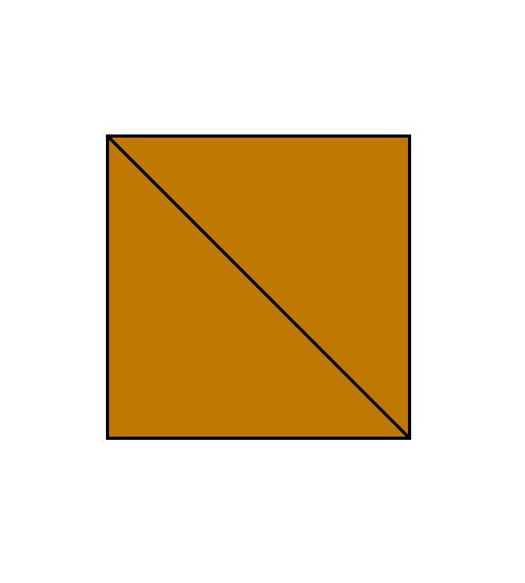

Earthquakes & Faults
Introduction
Earthquakes are sudden movements and shifts in the Earth’s Crust. Earthquakes are well known and are documented by the intensity that they have. Earthquakes are also known for causing other natural disasters like tsunamis.
Intensity
The Intensity of an Earthquake is the amount of destruction that an Earthquake causes. The Intensity of an Earthquake typically increases with the amount of magnitude of the Earthquake, the higher the number, the more destruction is caused.
Magnitude
Magnitude is the scale of an Earthquakes energy output or strength. As the magnitude increases, the energy output of the Earthquake exponentially increases with each number multiplying the energy output by 32 times while the strength being 10 times each number. For example, an Earthquake with a magnitude of 1, you wouldn’t even notice it, a magnitude 5 earthquake would knock small objects off of shelves and tables, and a magnitude 9 earthquake would crumble tall buildings and will cause buildings to fall. An example of an Earthquake is the Valdivia Earthquake in Chile with a magnitude of 9.5, the largest earthquake ever recorded in history, the Earthquake generated 178,000 times more energy than the atomic bombs dropped on Hiroshima (which for scale destroyed huge parts of Japan).
Causes of Earthquakes
Earthquakes are caused by many factors that are naturally occurring around the world. The most common cause of Earthquakes are sudden shifts in faults which are extended breaks in the Earth's crust, Earthquakes are most common in strike-slip faults since the horizontal force from both plates causes strong earthquakes. Another cause of earthquakes are volcanic eruptions. The pressure from volcanic eruptions causes intense shaking in the Earth’s crust which are Earthquakes.
Other Effects from Earthquakes
Besides the sudden shaking of the Earth’s crust, Earthquakes sometimes occur in oceans which disrupts the sea floor which then causes huge waves to move towards landmasses, these huge waves are known as tsunamis (津波). This combination with tsunamis and earthquakes are known as tsunami earthquakes. Earthquakes can also cause landslides which are shifts in a fault which causes a huge amount of land typically of high altitude to crumble apart and fall down to lower altitude.
Faults
A Fault in geography is a fracture between two blocks of rock. A fault can either be quick or slow in which very fast movement can cause an Earthquake, or very slowly over years. The fault’s size can range from a few millimeters to kilometers in length. There are three types of faults, Normal Faults, Reverse Faults, and Strike-Slip Faults…

The plate that doesn’t move is called the foot wall…

The plate that moves, forming a fault is called the hanging wall...

Normal Faults
Normal Faults are faults where the plate above the other slides downwards relative to the other plate. Normal faults typically occur
at divergent boundaries which are two plates moving away from each other.
Reverse Faults
Reverse Faults are the opposite of Normal Faults. The hanging wall instead goes over the foot wall instead of moving downwards. Reverse faults typically occur at convergent boundaries where two plates move towards each other…

Strike-Slip Faults
Strike-Slip Faults are vastly different from Reverse and Normal Faults. Instead of the hanging wall moving, both are moving horizontally away from each other. Strike-Slip Faults typically occur at transform boundaries where two plates horizontally move away from each other.
